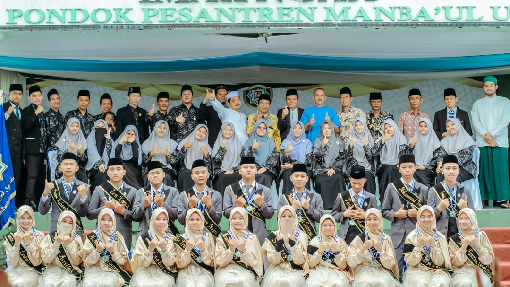

Angkatan Bluva de Marce adalah sebuah keluarga besar yang terdiri dari individu-individu yang luar biasa. Setiap anggotanya telah berkontribusi dalam menciptakan kenangan dan pencapaian yang tak terlupakan selama masa di Pondok Pesantren Manbaul Ulum 2. Berikut adalah nama-nama anggota yang menjadi bagian penting dari perjalanan kami bersama:
Demikianlah perkenalan singkat mengenai anggota angkatan Bluva de Marce. Kami berharap informasi ini dapat memberikan gambaran yang jelas tentang keberagaman dan kekuatan angkatan kami.
Kembali ke Beranda